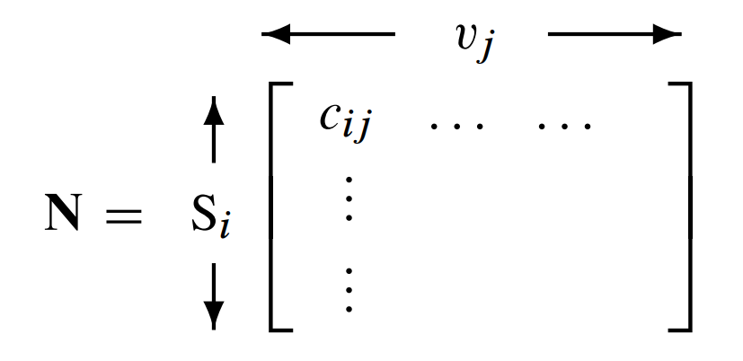
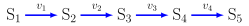
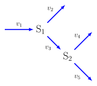
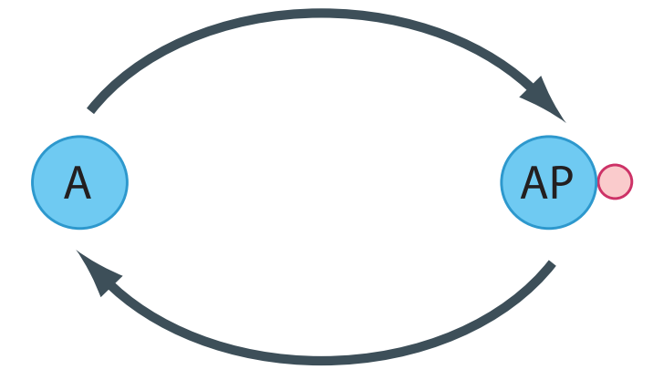
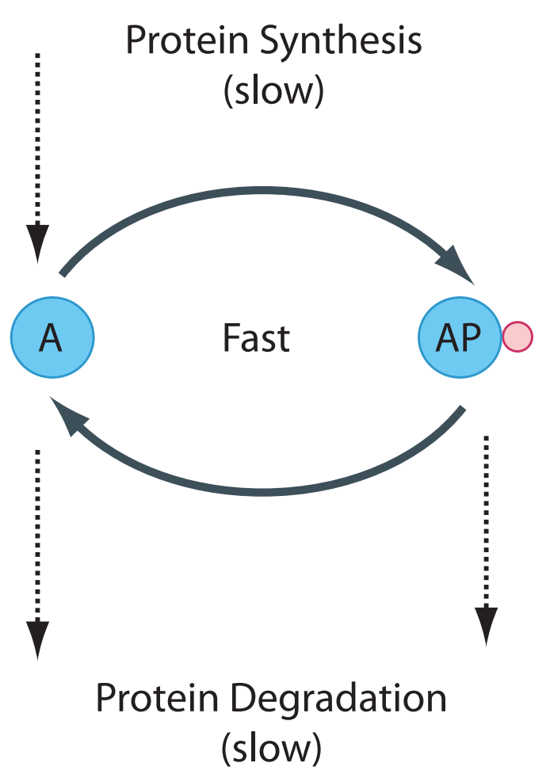
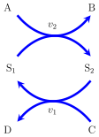
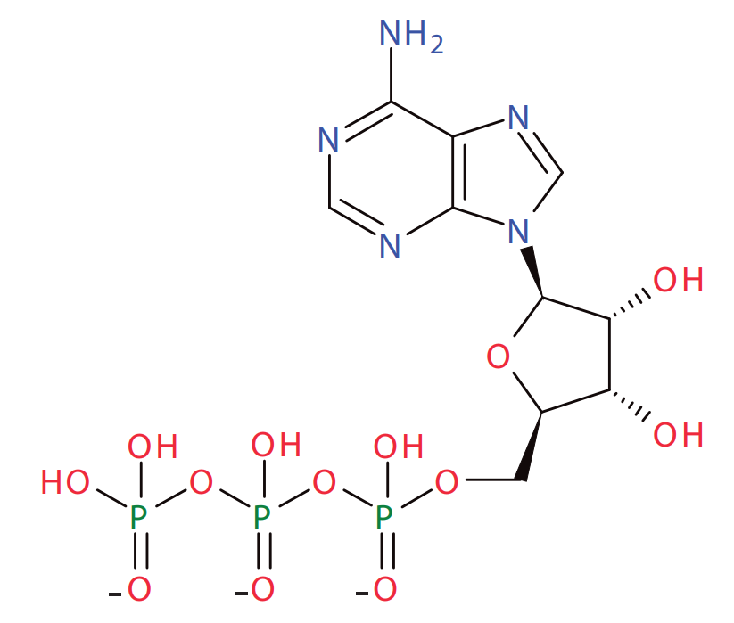
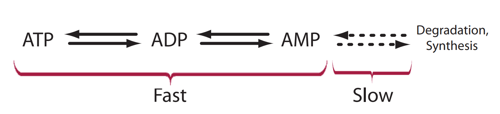
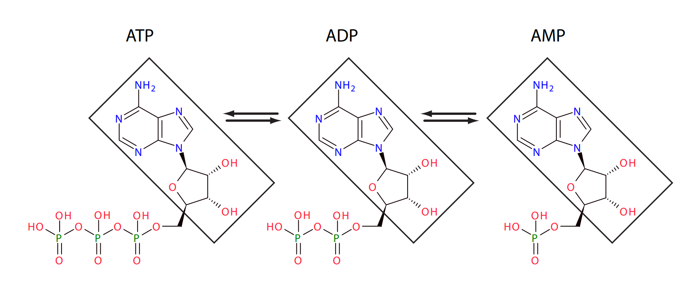

6.1. Stoichiometry Matrix#
When describing multiple reactions in a network, it is convenient to represent the stoichiometries in a compact form called the {bfseries stoichiometry matrix}. Traditionally the matrix is denoted by \(\bf N\), where the symbol \({\bf N}\) refers to number. The stoichiometry matrix is a \(m\) row by \(n\) column matrix, where \(m\) is the number of species and \(n\) the number of reactions:
The columns of the stoichiometry matrix correspond to the individual chemical reactions in the network. The rows correspond to the molecular species, with one row per species. Thus, the intersection of a row and column in the matrix indicates whether a certain species takes part in a particular reaction or not. The sign of the element determines whether there is a net loss or gain of substance, and the magnitude describes the relative quantity of substance taking part in the reaction.
The elements of the stoichiometry matrix do not concern themselves with the rate of reaction. This latter point is particularly important because various stoichiometric analyses can be carried out purely on the stoichiometry without any reference to reaction rate laws.
Stoichiometrix Matrix
The stoichiometric matrix is not concerned with describing reaction rates, it only describes the stoichiometric structure of the network.
In general, the stoichiometry matrix has the form:
{kind=link}
where \(c_{ij}\) is the stoichiometry coefficient for the \(i^{\text{th}}\) species and \(j^{\text{th}}\) reaction. The stoichiometry matrix is generally a lossy representation. That is, it is not always possible to revert back to the original biochemical network from which the matrix was derived. For example, consider the simple stoichiometry matrix:
The most obvious network that this matrix could have been derived from is:
But an equally plausible network is:
It is not always possible from the stoichiometry matrix alone to determine the original network.
Example:
Write out the stoichiometry matrix for the simple chain of reactions which has five molecular species and four reactions as shown below. The four reactions are labeled, \(v_1\) to \(v_4\).

The stoichiometry matrix for this simple system is given by:
The rows and columns of the matrix have been labeled for convenience. Normally labels are absent.
Example:
Write out the stoichiometry matrix for the multibranched pathway shown below:

6.1.1. Moiety Conserved Cycles#
Many cell processes operate on different time scales. For example, metabolic processes tend to operate on a faster scale than protein synthesis and degradation. Such time scale differences have a number of implications to model builders, software designers, and model behavior. In this chapter we will briefly examine some of these aspects in relation to species conservation laws.
To introduce this topic, consider a simple protein phosphorylation cycle such as the one shown in the Figure below. This shows a protein undergoing phosphorylation (upper limb) and dephosphorylation (lower limb) via a kinase and phosphatase, respectively.
{kind=link}
The depiction in the Figure above is a simplification. The ATP used during phosphorylation and the release of free phosphate during the dephosphorylation event are not shown. In addition, synthesis and degradation of protein is also absent. In many cases we can leave these aspects out of the picture. ATP for instance is held at a relatively constant level by strong homeostatic forces from metabolism so that within the context of the cycle, changes in ATP isn’t something we must worry about. More interesting is that within the time scale of phosphorylation and dephosphorylation, we can assume that the rate of protein synthesis and degradation is negligible (Figure~ref{fig:CovalentProteinCycleProteinSynthesis}). This assumption is more significant and leads to the emergence of a new property called moiety conservation.
{kind=link}
Phosphorylation and dephosphorylation cycle that also includes the slower process of protein synthesis and degradation. We assume that the phosphorylated and unphosphorylated protein can be degraded but only the unphosphorylated protein is synthesized.
In chemistry a moiety is described as a subgroup of a larger molecule. In this case the moiety is a protein. During the interconversion between the phosphorylated and unphosphorylated states, the amount of moiety (protein) remains constant. More abstractly we can draw a cycle in the following way (Figure~ref{fig:SimpleConservedCycleA}), where S`_1` and S`_2` are the cycle species:

Simple conserved cycle where \(S_1\) + \(S_2\) = constant.
The two species \(S_1\) and \(S_2\) are conserved because the total \(S_1 + S_2\) remains constant over time (at least over a time scale shorter than other processes that may be involved). Such cycles are collectively called {bfseries moiety conserved cycles}.
Moieties
Moiety = A subgroup of a larger molecule.
Conserved Moiety = A subgroup whose interconversion through a sequence of reactions leaves it unchanged.
Protein signalling pathways abound with conserved cycles such as these although many are more complex and may involve multiple phosphorylation reactions. In addition to protein networks, other pathways also possess conservation cycles. One of the earliest conservation cycles to be recognized was the adenosine triphosphate (ATP) cycle. ATP is a chain of three phosphate residues linked to a nucleoside adenosine group as shown below.
{kind=link}
Adenosine Triphosphate: Three phosphate groups plus an adenosine subgroup.
The linkage between the phosphate groups involves an unstable phosphoric acid anhydride bond. These bonds can be cleaved by hydrolysis one at a time leading to the formation of adenosine diphosphate (ADP) and adenosine monophosphate (AMP), respectively. The hydrolysis provides much of the free energy to drive endergonic processes in the cell. Given the insatiable need for energy, there is a continual and rapid interconversion between ATP, ADP and AMP as energy is released or captured. One constant during these interconversions is the amount of adenosine group. Adenosine is a conserved moiety.
Over longer time scales there is also the slower process of AMP degradation and biosynthesis via the purine nucleotide pathway; but for many models, we assume that this process is very slow compared to ATP turnover by energy metabolism.
{kind=link}
The interconversion of ATP, ADP and AMP is generally considered fast in comparison to the slow process of synthesis and degradation of AMP.
There are many other examples of conserved moieties such enzyme/enzyme-substrate complexes, NAD/NADHindex{NAD/NADH}, phosphated to their net synthesis and degradation. We should emphasize that in reality, conserved moieties do not exist since all molecular subgroups will at some point be subject to synthesis and degradation. However, over sufficiently short time scales, the sum total of these groups can be considered constant.
{kind=link}
The adenosine moiety, indicated by the boxed molecular group, is conserved during the interconversion of ATP, ADP and AMP.
6.1.2. Conservation Laws#
How do moiety conserved cycles laws impact the stoichiometriy matrix?
Any moiety conserved cycles in a pathway results in dependent rows in the stoichiometry matrix. For example concisder the simple cycle:
The stoichimetry matrix is given by:
Looking at the two rows we can see that the second row is the same as the first row if we multily it by -1. This tells us that the second row is linearly dependent on the first row. This splits the matrix into a set of dependent and independent species. For convenience, the rows of the stoichiometry matrix can be reordered so that the independent rows are the top most rows. We can extract the top independent rows into a new matrix with the symbol \({\bf N_r}\), meaning the reduced stoichiometry matrix.
The number of rows in \({\bf N_r}\) is the rank of the stoichiometry matrix which we denote by \(m_o\). The dependent rows, of which there are \(m-m_o\), can be derived from \({\bf N_r}\) by application of a set of elementary operations which we denote by the matrix \({\bf L_o}\).
The link matrix is now defined as an identity matrix of size \(m_o\) combined with the \({\bf L_o}\) matrix:
The full stoichiometry matrix cna then we writtin in terms of the product of the link matrix and the reduced stoichiometry matrix:
In practice the factorization of the stoichiometric matrix is accomplished using either LU or QR factorization. Most main stream modeling packages carry out this reduction in order to ensure numerical stability.
Advanced topic one